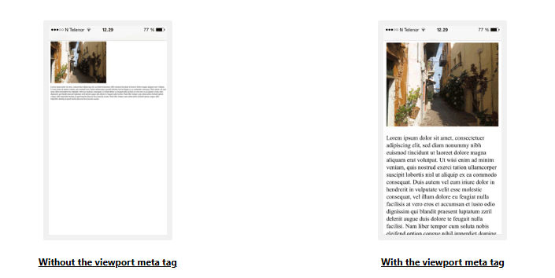

HTML Style Guide
சீரான, சுத்தமான, ஒழுங்கான HTML குறியீடு மற்றவர்களுக்கு உங்கள் குறியீட்டைப் படிப்பதையும் புரிந்துகொள்வதையும் எளிதாக்குகிறது.
இங்கே சிறந்த HTML குறியீட்டை உருவாக்குவதற்கான சில வழிகாட்டுதல்கள் மற்றும் உதவிக்குறிப்புகள் உள்ளன.
Always Declare Document Type
எப்போதும் ஆவண வகையை உங்கள் ஆவணத்தின் முதல் வரியாக அறிவிக்கவும்.
HTMLக்கான சரியான ஆவண வகை:
<!DOCTYPE html>Use Lowercase Element Names
HTML கூறு பெயர்களில் பெரிய எழுத்துகள் மற்றும் சிறிய எழுத்துகளை கலக்க அனுமதிக்கிறது.
இருப்பினும், சிறிய எழுத்து உறுப்பு பெயர்களைப் பயன்படுத்த பரிந்துரைக்கிறோம், ஏனென்றால்:
பெரிய எழுத்து மற்றும் சிறிய எழுத்து பெயர்களை கலப்பது மோசமாகத் தெரிகிறது
டெவலப்பர்கள் பொதுவாக சிறிய எழுத்து பெயர்களைப் பயன்படுத்துகிறார்கள்
சிறிய எழுத்து சுத்தமாகத் தெரிகிறது
சிறிய எழுத்து தட்டச்சு செய்வது எளிது
Good:
<body>
<p>This is a paragraph.</p>
</body>Bad:
<BODY>
<P>This is a paragraph.</P>
</BODY>Close All HTML Elements
HTML இல், நீங்கள் அனைத்து கூறுகளையும் மூட வேண்டியதில்லை (எடுத்துக்காட்டாக <p> கூறு).
இருப்பினும், அனைத்து HTML கூறுகளையும் மூடுவதை நாங்கள் கடுமையாகப் பரிந்துரைக்கிறோம்:
Good:
<section>
<p>This is a paragraph.</p>
<p>This is a paragraph.</p>
</section>Bad:
<section>
<p>This is a paragraph.
<p>This is a paragraph.
</section>Use Lowercase Attribute Names
HTML பண்புக்கூறு பெயர்களில் பெரிய எழுத்துகள் மற்றும் சிறிய எழுத்துகளை கலக்க அனுமதிக்கிறது.
இருப்பினும், சிறிய எழுத்து பண்புக்கூறு பெயர்களைப் பயன்படுத்த பரிந்துரைக்கிறோம், ஏனென்றால்:
Good:
<a href="https://www.jassifteam.com/html/">Visit our HTML tutorial</a>Bad:
<a HREF="https://www.jassifteam.com/html/">Visit our HTML tutorial</a>Always Quote Attribute Values
HTML மேற்கோள்கள் இல்லாமல் பண்புக்கூறு மதிப்புகளை அனுமதிக்கிறது.
இருப்பினும், பண்புக்கூறு மதிப்புகளை மேற்கோள் காட்ட பரிந்துரைக்கிறோம், ஏனென்றால்:
- டெவலப்பர்கள் பொதுவாக பண்புக்கூறு மதிப்புகளை மேற்கோள் காட்டுகிறார்கள்
- மேற்கோள் காட்டப்பட்ட மதிப்புகள் படிக்க எளிதானது
- மதிப்பில் இடைவெளிகள் இருந்தால் நீங்கள் மேற்கோள்களைப் பயன்படுத்த வேண்டும்
Good:
<table class="striped">Bad:
<table class=striped>Very bad:
இது வேலை செய்யாது, ஏனெனில் மதிப்பில் இடைவெளிகள் உள்ளன:
<table class=table striped>Always Specify alt, width, and height for Images
படங்களுக்கு எப்போதும் alt பண்புக்கூறைக் குறிப்பிடவும். சில காரணங்களால் படத்தைக் காட்ட முடியாவிட்டால் இந்தப் பண்புக்கூறு முக்கியமானது.
மேலும், எப்போதும் படங்களின் அகலம் மற்றும் உயரத்தை வரையறுக்கவும். இது நடுக்கத்தைக் குறைக்கிறது, ஏனெனில் உலாவி படத்தை ஏற்றுவதற்கு முன் இடத்தை ஒதுக்கி வைக்க முடியும்.
Good:
<img src="html5.gif" alt="HTML5" style="width:128px;height:128px">Bad:
<img src="html5.gif">Spaces and Equal Signs
HTML சம அடையாளங்களுக்கு சுற்றி இடைவெளிகளை அனுமதிக்கிறது. ஆனால் இடைவெளி இல்லாமல் படிக்க எளிதானது மற்றும் நிறுவனங்களை சிறப்பாக ஒன்றாக இணைக்கிறது.
Good:
<link rel="stylesheet" href="styles.css">Bad:
<link rel = "stylesheet" href = "styles.css">Avoid Long Code Lines
HTML எடிட்டரைப் பயன்படுத்தும் போது, HTML குறியீட்டைப் படிக்க வலது மற்றும் இடதுபுறமாக ஸ்க்ரோல் செய்வது வசதியாக இல்லை.
மிக நீண்ட குறியீட்டு வரிகளைத் தவிர்க்க முயற்சிக்கவும்.
Blank Lines and Indentation
காரணமின்றி வெற்று வரிகளை, இடைவெளிகளை அல்லது உள்தள்ளல்களைச் சேர்க்க வேண்டாம்.
படிப்பதற்கு எளிதாக, பெரிய அல்லது தருக்க குறியீட்டு தொகுதிகளைப் பிரிக்க வெற்று வரிகளைச் சேர்க்கவும்.
படிப்பதற்கு எளிதாக, இரண்டு இடைவெளி உள்தள்ளலைச் சேர்க்கவும். Tab விசையைப் பயன்படுத்த வேண்டாம்.
Good:
<body>
<h1>Famous Cities</h1>
<h2>Tokyo</h2>
<p>Tokyo is the capital of Japan, the center of the Greater Tokyo Area,
and the most populous metropolitan area in the world.</p>
<h2>London</h2>
<p>London is the capital city of England. It is the most populous
city in the United Kingdom.</p>
<h2>Paris</h2>
<p>Paris is the capital of France. The Paris area is one of the largest
population centers in Europe.</p>
</body>Bad:
<body>
<h1>Famous Cities</h1>
<h2>Tokyo</h2><p>Tokyo is the capital of Japan, the center of the Greater Tokyo Area,
and the most populous metropolitan area in the world.</p>
<h2>London</h2><p>London is the capital city of England. It is the most populous
city in the United Kingdom.</p>
<h2>Paris</h2><p>Paris is the capital of France. The Paris area is one of the largest
population centers in Europe.</p>
</body>Good Table Example:
<table>
<tr>
<th>Name</th>
<th>Description</th>
</tr>
<tr>
<td>A</td>
<td>Description of A</td>
</tr>
<tr>
<td>B</td>
<td>Description of B</td>
</tr>
</table>Good List Example:
<ul>
<li>London</li>
<li>Paris</li>
<li>Tokyo</li>
</ul>Never Skip the <title> Element
<title> உறுப்பு HTML இல் தேவை.
பக்கத் தலைப்பின் உள்ளடக்கம் தேடுபொறி உகப்பாக்கத்திற்கு (SEO) மிகவும் முக்கியமானது! தேடல் முடிவுகளில் பக்கங்களை பட்டியலிடும் போது வரிசையை முடிவு செய்ய தேடுபொறி வழிமுறைகளால் பக்கத் தலைப்பு பயன்படுத்தப்படுகிறது.
<title> உறுப்பு:
- உலாவி கருவிப்பட்டியில் தலைப்பை வரையறுக்கிறது
- பக்கம் விருப்பங்களில் சேர்க்கப்படும்போது தலைப்பை வழங்குகிறது
- தேடுபொறி முடிவுகளில் பக்கத்திற்கான தலைப்பைக் காட்டுகிறது
எனவே, தலைப்பை முடிந்தவரை துல்லியமாகவும் அர்த்தமுள்ளதாகவும் ஆக்க முயற்சிக்கவும்:
<title>HTML Style Guide and Coding Conventions</title>Omitting <html> and <body>?
<html> மற்றும் <body> குறிச்சொற்கள் இல்லாமல் ஒரு HTML பக்கம் சரிபார்க்கப்படும்:
Example
<!DOCTYPE html>
<head>
<title>Page Title</title>
</head>
<h1>This is a heading</h1>
<p>This is a paragraph.</p>இருப்பினும், எப்போதும் <html> மற்றும் <body> குறிச்சொற்களைச் சேர்க்கவும் என்று நாங்கள் கடுமையாகப் பரிந்துரைக்கிறோம்!
<body> ஐத் தவிர்ப்பது பழைய உலாவிகளில் பிழைகளை உருவாக்கும்.
<html> மற்றும் <body> ஐத் தவிர்ப்பது DOM மற்றும் XML மென்பொருளையும் கிராஷ் செய்யும்.
Omitting <head>?
HTML <head> குறிச்சொல்லையும் தவிர்க்கலாம்.
உலாவிகள் <body>க்கு முன் உள்ள அனைத்து கூறுகளையும் இயல்புநிலை <head> உறுப்பில் சேர்க்கும்.
Example
<!DOCTYPE html>
<html>
<title>Page Title</title>
<body>
<h1>This is a heading</h1>
<p>This is a paragraph.</p>
</body>
</html>இருப்பினும், <head> குறிச்சொல்லைப் பயன்படுத்த பரிந்துரைக்கிறோம்.
Close Empty HTML Elements?
HTML இல், வெற்று கூறுகளை மூடுவது விருப்பமானது.
Allowed:
<meta charset="utf-8">Also Allowed:
<meta charset="utf-8" />உங்கள் பக்கத்தை அணுக XML/XHTML மென்பொருள் எதிர்பார்த்தால், மூடும் சாய்வுக்கோட்டை (/), வைத்திருங்கள், ஏனெனில் இது XML மற்றும் XHTML இல் தேவைப்படுகிறது.
Add the lang Attribute
வலைப்பக்கத்தின் மொழியை அறிவிக்க, <html> குறிச்சொல்லுக்குள் lang பண்புக்கூறை எப்போதும் சேர்க்க வேண்டும். இது தேடுபொறிகள் மற்றும் உலாவிகளுக்கு உதவுவதற்காகும்.
Example
<!DOCTYPE html>
<html lang="en-us">
<head>
<title>Page Title</title>
</head>
<body>
<h1>This is a heading</h1>
<p>This is a paragraph.</p>
</body>
</html>Meta Data
சரியான விளக்கம் மற்றும் சரியான தேடுபொறி அட்டவணையிடலை உறுதிப்படுத்த, மொழி மற்றும் எழுத்து குறியாக்கம் <meta charset="charset"> இரண்டும் HTML ஆவணத்தில் முடிந்தவரை விரைவில் வரையறுக்கப்பட வேண்டும்:
<!DOCTYPE html>
<html lang="en-us">
<head>
<meta charset="UTF-8">
<title>Page Title</title>
</head>Setting The Viewport
பார்வைப்பகுதி என்பது வலைப்பக்கத்தின் பயனர் காணக்கூடிய பகுதியாகும். இது சாதனத்தைப் பொறுத்து மாறுபடும் - இது மொபைல் தொலைபேசியில் கணினி திரையை விட சிறியதாக இருக்கும்.
உங்கள் அனைத்து வலைப்பக்கங்களிலும் பின்வரும் <meta> உறுப்பைச் சேர்க்க வேண்டும்:
<meta name="viewport" content="width=device-width, initial-scale=1.0">இது பக்கத்தின் பரிமாணங்கள் மற்றும் அளவிடுதலை எவ்வாறு கட்டுப்படுத்துவது என்பது குறித்து உலாவிக்கு வழிமுறைகளை அளிக்கிறது.
width=device-width பகுதி பக்கத்தின் அகலத்தை சாதனத்தின் திரை-அகலத்தைப் பின்பற்ற அமைக்கிறது (இது சாதனத்தைப் பொறுத்து மாறுபடும்).
initial-scale=1.0 பகுதி உலாவியால் பக்கம் முதல் முறையாக ஏற்றப்படும்போது ஆரம்ப அளவு அளவை அமைக்கிறது.
பார்வைப்பகுதி மெட்டா குறிச்சொல் இல்லாமல் ஒரு வலைப்பக்கத்திற்கான எடுத்துக்காட்டு மற்றும் பார்வைப்பகுதி மெட்டா குறிச்சொல்லுடன் கூடிய அதே வலைப்பக்கம் இங்கே:

பார்வைப்பகுதி மெட்டா குறிச்சொல் இல்லாமல் ஒரு வலைப்பக்கத்திற்கான எடுத்துக்காட்டு மற்றும் பார்வைப்பகுதி மெட்டா குறிச்சொல்லுடன் கூடிய அதே வலைப்பக்கம்
உதவிக்குறிப்பு:
நீங்கள் இந்தப் பக்கத்தை தொலைபேசி அல்லது டேப்லெட்டில் உலாவுகிறீர்கள் என்றால், வித்தியாசத்தைக் காண கீழே உள்ள இரண்டு இணைப்புகளையும் கிளிக் செய்யலாம்:
பார்வைப்பகுதி மெட்டா குறிச்சொல் இல்லாமல்
பார்வைப்பகுதி மெட்டா குறிச்சொல் இல்லாமல் உள்ளடக்கம் சரியாக அளவிடப்படாது
பார்வைப்பகுதி மெட்டா குறிச்சொல்லுடன்
பார்வைப்பகுதி மெட்டா குறிச்சொல்லுடன் உள்ளடக்கம் சாதன அகலத்திற்கு ஏற்ப சரியாக அளவிடப்படுகிறது
HTML Comments
குறுகிய கருத்துகள் ஒரு வரியில் எழுதப்பட வேண்டும்:
<!-- This is a comment -->ஒன்றுக்கு மேற்பட்ட வரிகளை உள்ளடக்கிய கருத்துகள், இப்படி எழுதப்பட வேண்டும்:
<!--
This is a long comment example. This is a long comment example.
This is a long comment example. This is a long comment example.
-->நீண்ட கருத்துகள் இரண்டு இடைவெளிகளுடன் உள்தள்ளப்பட்டால் அவதானிக்க எளிதானது.
Using Style Sheets
பாணி தாள்களை இணைக்க எளிய தொடரியலைப் பயன்படுத்தவும் (type பண்புக்கூறு தேவையில்லை):
<link rel="stylesheet" href="styles.css">குறுகிய CSS விதிகள் இவ்வாறு சுருக்கமாக எழுதப்படலாம்:
p.intro {font-family:Verdana;font-size:16em;}நீண்ட CSS விதிகள் பல வரிகளில் எழுதப்பட வேண்டும்:
body {
background-color: lightgrey;
font-family: "Arial Black", Helvetica, sans-serif;
font-size: 16em;
color: black;
}CSS Style Guidelines:
- தேர்ந்தெடுப்பாளரின் அதே வரியில் திறக்கும் அடைப்புக்குறியை வைக்கவும்
- திறக்கும் அடைப்புக்குறிக்கு முன் ஒரு இடைவெளியைப் பயன்படுத்தவும்
- இரண்டு இடைவெளி உள்தள்ளலைப் பயன்படுத்தவும்
- கடைசி உட்பட ஒவ்வொரு பண்புக்கூறு-மதிப்பு இணைக்கும் பிறகும் அரைப்புள்ளியைப் பயன்படுத்தவும்
- மதிப்பில் இடைவெளிகள் இருந்தால் மட்டுமே மதிப்புகளைச் சுற்றி மேற்கோள்களைப் பயன்படுத்தவும்
- முன்னணி இடைவெளிகள் இல்லாமல் ஒரு புதிய வரியில் மூடும் அடைப்புக்குறியை வைக்கவும்
Loading JavaScript in HTML
வெளி ஸ்கிரிப்டுகளை ஏற்ற எளிய தொடரியலைப் பயன்படுத்தவும் (type பண்புக்கூறு தேவையில்லை):
<script src="myscript.js">Accessing HTML Elements with JavaScript
"அசுத்தமான" HTML குறியீட்டைப் பயன்படுத்துவது JavaScript பிழைகளுக்கு வழிவகுக்கும்.
இந்த இரண்டு JavaScript அறிக்கைகள் வெவ்வேறு முடிவுகளைத் தரும்:
Example
getElementById("Demo").innerHTML = "Hello";
getElementById("demo").innerHTML = "Hello";JavaScript Style Guide ஐப் பார்வையிடவும்.
Use Lower Case File Names
சில வலை சேவையகங்கள் (Apache, Unix) கோப்பு பெயர்களைப் பற்றி case sensitive ஆகும்: "london.jpg" என "London.jpg" என அணுக முடியாது.
மற்ற வலை சேவையகங்கள் (Microsoft, IIS) case sensitive அல்ல: "london.jpg" என "London.jpg" என அணுகலாம்.
நீங்கள் பெரிய எழுத்து மற்றும் சிறிய எழுத்து கலவையைப் பயன்படுத்தினால், இதைப் பற்றி நீங்கள் அறிந்திருக்க வேண்டும்.
நீங்கள் case-insensitive இலிருந்து case-sensitive சேவையகத்திற்கு நகர்ந்தால், சிறிய பிழைகள் கூட உங்கள் வலைத்தளத்தை உடைக்கும்!
இந்த சிக்கல்களைத் தவிர்க்க, எப்போதும் சிறிய எழுத்து கோப்புப் பெயர்களைப் பயன்படுத்தவும்!
File Extensions
| File Type | Extension |
|---|---|
| HTML files | should have a .html extension (.htm is allowed) |
| CSS files | should have a .css extension |
| JavaScript files | should have a .js extension |
Differences Between .htm and .html?
.htm மற்றும் .html கோப்பு நீட்டிப்புகளுக்கு இடையே வேறுபாடு இல்லை!
இரண்டையும் எந்த வலை உலாவி மற்றும் வலை சேவையகமும் HTML ஆக கருதும்.
Default Filenames
ஒரு URL இறுதியில் கோப்புப் பெயரைக் குறிப்பிடாதபோது (https://www.jassifteam.com/ போன்றது), சேவையகம் "index.html", "index.htm", "default.html" அல்லது "default.htm" போன்ற இயல்புநிலை கோப்புப் பெயரைச் சேர்க்கும்.
உங்கள் சேவையகம் "index.html" மட்டுமே இயல்புநிலை கோப்புப் பெயராக கட்டமைக்கப்பட்டிருந்தால், உங்கள் கோப்பு "index.html" என பெயரிடப்பட வேண்டும், "default.html" அல்ல.
இருப்பினும், சேவையகங்கள் ஒன்றுக்கு மேற்பட்ட இயல்புநிலை கோப்புப் பெயர்களுடன் கட்டமைக்கப்படலாம்; பொதுவாக நீங்கள் விரும்பும் பல இயல்புநிலை கோப்புப் பெயர்களை அமைக்கலாம்.